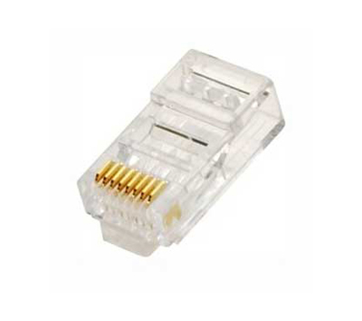
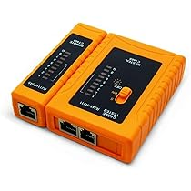

Cable UTP
Ponchadora

Conectores RJ45
Pelacables

Una vez ya tengamos los materiales lo primero que debe saber es el tipo de cableado que va a realizar, puede ser directo o cruzado. En el cable directo ambos extremos tienen el mismo estándar, mientras que en el cruzado un extremo tiene el estándar T568A y el otro el estándar T568B.
Existen dos estándares de cableado que son los más conocidos y sencillos de aprender que son: el estandar T568A y T568B.
Una vez se tenga medida la longitud del cable UTP, con la ponchadora o pelacable realizará un corte al cable protector sin dañar los cables internos. El corte puede ser del tamaño de la punta de su dedo.
Luego de cortar el cable protector verá unos cable de colores azul, verde, naranja y chocolate, cada uno con un cable blanco con rayas de los colores mencionados. En algunos casos los colores variarán a rojos o negros o incluso los colores serán más palidos, esto no será un inconveniente pues el proceso será siendo el mismo.
El siguiente paso será el trenzado. En las imagenes anteriores verá los estándares para trenzar los cables con sus colores y números.
Una vez los cables estén bien organizados por color, agarrará un cabezal RJ-45 y medirá que tan largo deben quedar los cables de colores para entrar en el cabezal. Debe asegurarse de que al menos una pequeña parte del cable protector quede dentro del cabezal para asegurar mejor el cable y realizar un trabajo más limpio.
Ya medido el tamaño de los cables de colores con el cabezal, lo siguiente será con la ponchadora cortar el sobrante de cables asegurandose que todos queden lo más parejos posibles. Introducirá los cables en el cabezal y al revisar que todos los cables lleguen hasta el final. Su ponchadora tendrá unos orificios con la forma del cabezal RJ-45 por los que debe introducir el mimsmo y al introducirlos solo debe apretar generando algo de presión hasta que ningun pin sobresalga.
Con ambos extremos del cable ponchados ahora comprobará si el cableado está bien hecho con ayuda del medidor. El medidor consta de dos partes cada una con 8 leds. Todas las leds del medidor deben encenderse una por una, ambas partes a la par dependiendo del estándar utilizado.
Como último paso comprobará si su cable permite la comunicación entre dispositivos host e intermedios.
Para esto necesitará dos computadoras, en ambas computadoras deberá entrar en Símbolo de Sistema o CMD, ingresar el comando ipconfig y darle enter, buscar la opción que dice adaptador Ethernet Ethernet y en una de las computadoras escribir el comando ping y el ip de la otra computadora. Como resultado de que el ping es correcto debería aparecerle 4 paquetes enviados, 4 paquetes recibidos y 0 perdidos.
Debe ser el mismo resultado al conectar dos computadoras con el cable cruzado o con algún dispositivo intermedio.